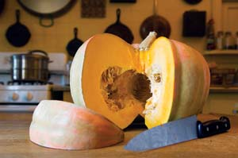
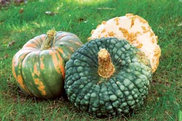
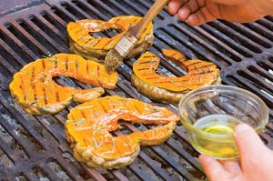
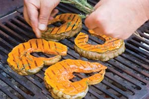
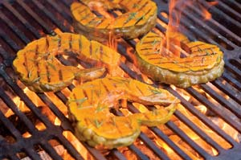
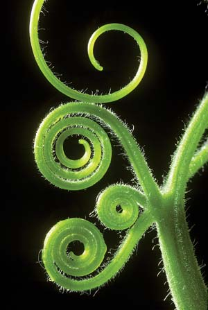

Each fall I get a sinking feeling when I drive past farm stands loaded with acres of orange field pumpkins. Yes, they’re fun for Halloween, but their bland flavor has given pumpkins a bad rap. And anyway, why are we encouraging a mono-culture devoted to the sort of pumpkins that are best sold in cans? There are lots of other wonderful culinary pumpkins with high decorative value: It’s a shame we don’t see more of them in our markets. Here is a trilogy of heirloom varieties I highly recommend for gardeners with room for long trailing vines. One is French, one is Italian and one is from Iran.
All three varieties belong to the species Cucurbita maxima, which means two things: the fruits and vines are large, and if you plant them together, they’ll cross and you won’t want to save their seed. In flavor and culinary value, these three are definite winners and even if I don’t always grow them myself, I make an annual beeline to the farmers who do.
Of the three, this French heirloom variety is quite an eye-popper! The pumpkins are flat and squat, and the hard skin of the mature fruit is salmon-pink and covered with warts resembling peanut shells. These bumps are sometimes called “sugar warts,” because they’re caused by a buildup of sugars under the skin. It takes its name from Eysines, the place in France where it originated in the 19th century. In France the ‘Galeux d’Eysines’ is mostly used for soups, sauces and preserves such as pumpkin butter because the texture of the cooked fruit is very smooth. A pumpkin’s flavor is most concentrated just under its skin and in the seed mass; boil the flesh (minus the skin) and the seed mass (minus the seeds) when making a soup stock and you’ll really taste the difference. The orange flesh is fragrant and quite sweet with a hint of sweet potato and apple. Each pumpkin weighs about 10 to 15 pounds and if picked before frost, it will store for up to six months.
The history of this pumpkin is well-documented thanks to the research of professor Herwig Teffner of the University of Graz in Austria. According to Teffner, this pumpkin evolved around Venice in the latter part of the 1600s. It takes its name from the fishing village of Chioggia, which became a major source of produce for Venetians once the salt marshes nearby were drained and cultivated.
My first encounter with this pumpkin occurred one brisk, foggy fall morning at the produce market in Venice, where barges piled high with them were moored along the Grand Canal. The farmers were slicing and grilling them right there by the water. No matter where you went in Venice that day, you could smell those pumpkins grilling with olive oil and rosemary.
‘Marina di Chioggia’ is turban-shaped, with a unique blue-green skin that’s divided into ridges. Like ‘Galeux d’Eysines,’ it’s covered with sugar warts.
The flesh is dark yellow-orange, very dense in texture and almost meaty, which is why it grills so well. The average weight of the fruit is about 10 pounds, and like the French variety, it has very vigorous vines. It will store for about six months.
As far as I’m concerned, this is the ultimate grilling pumpkin. All you need to do is cut it into slices like you would an apple, along the natural divisions in the skin. Brush it with olive oil; cook it on a grill until hot all the way through; then scatter sea salt and chopped rosemary over each slice (see photos in the Image Gallery). Eat it with your fingers: that’s the way the Venetians do it.
As pumpkins go in North America, ‘Iran’ is the newest kid on the block. I don’t think it has been available for more than five years, and it has been sold under a variety of names, the most common being ‘Iran.’ This is one of the most beautiful of the large, smooth-skinned heirloom varieties. Everyone who sees it comments that it looks painted, with splashes of green, gray, white and orange-red. It is an old variety in Iran, but so far its documented history has not surfaced. On the other hand, its uses are many and well-known if you talk to Iranians familiar with traditional cookery.
The thin skin hardens as it ages, so it’s a great storing pumpkin. It will keep for as long as eight months or even a year if you harvest it before the first frost and store it in a cool, dark, dry area. The flesh is a dull yellow, very dense and somewhat brittle in pumpkins that have been stored a long time. This has its advantages because it’s mealy when cooked, thus excellent for soups, and especially the stews for which Iranian cookery is famous. It tastes great pickled with sugar and garlic, and the seeds are highly valued as a toasted snack. Spread them out on a cookie sheet with a dash of sea salt, and bake at 350 degrees for five to eight minutes, watching carefully for signs of scorching. You’ll know when they’re done by the toasty aroma. (This goes for all pumpkin seeds.)
Because the flavor of the flesh hints of peanuts and basil, both figure prominently in Iranian recipes using this pumpkin.
Start seeds indoors in 4-inch pots, then move them outside after the threat of frost has passed. This precaution will help you avoid the common problem of mice, squirrels or moles eating the seeds when directly planted in hills. Plant your seedlings on large, well-fertilized hills 8 feet apart, about four to a hill. If you want them to grow quickly, cover the ground first with black plastic. The plastic will keep weeds at bay and discourage squash beetles, which tend to attack the base of the stems. Keep the plants well-watered and well-fertilized, and make sure they have enough room in the garden or lawn to sprawl about. All three varieties tend to produce fruits toward the end of the vines, which in the case of the Iranian pumpkin, might end up as far away as 16 to 20 feet from the hill. All three varieties ripen in about 100 days. They’re ready to pick as soon as the stems are dry and they sound hollow when tapped.
If you want to save true seeds for replanting, grow only one species at a time so they don’t cross. Let the pumpkins ripen on the vine as long as possible. Select the pumpkins with the best characteristics, and eat or discard any that are deformed or strangely colored (you don’t want to perpetuate those qualities). After you pick the pumpkins selected for seed, store them for at least a month in a cool, dry pantry. This will allow the seeds to draw more energy from the pumpkin, thus increasing the rate of germination.
To store the seeds, separate them from the seed mass, wash thoroughly in a strainer and let them dry on a screen. Once the seeds are dry, store in airtight containers or jars. Seal the containers with masking tape, date the batch, and put it in the refrigerator or freeze it. Renew seed every four years.
(Empanadas with Sweet Pumpkin Filling)
I have featured pumpkin soups and pumpkin dumplings in the past, so why not try something different that really showcases the adaptability of these three pumpkins? I have gone to South America for this delightful dessert. Pumpkin pie, move over!
Step One: Prepare the Dough
4 cups all-purpose flour
2 tsp baking powder
2 tsp sea salt
2 eggs
1/2 cup olive oil
6 tbsp water
Sift the flour, baking powder and salt into a large mixing bowl and make a valley in the center. Beat eggs until lemon in color and pour into the valley. Add olive oil and half the water. Stir to form dry crumbs, adding only enough additional water so that the dough becomes soft and loose like short pastry crumbs. Cover and set aside in the refrigerator for 30 to 40 minutes. While the dough is resting, make the filling.
Step Two: Filling for the Empanadas
4 cups (2 pounds) puréed cooked pumpkin
3 tbsp bulgur wheat
1 tbsp olive oil
1/3 cup black raisins or zante currants
1/3 cup yellow or green raisins
4 tbsp sugar or honey to taste
1 tsp powdered cinnamon
1/4 tsp powdered cardamom
Add all ingredients to a deep stewing pan and bring to a gentle boil over medium heat. Stir occasionally so the ingredients are well combined and continue cooking until the wheat is thoroughly soft and the mixture has thickened to a loose, grainy consistency (about 15 to 20 minutes). Remove from heat and set aside to cool. While the filling is cooling, make the egg glaze for the pastries.
Step Three: Egg Glaze
1 egg
2 tbsp rich milk or cream
Pinch of salt
Beat the egg until lemon in color, then add the milk and salt. Whisk until thoroughly combined, and set aside until you are ready to bake.
Once the filling is cool and the dough has rested, roll out the dough “paper thin” on a lightly floured surface and cut it into 5-inch rounds. Fill each round with 1 or 2 tablespoons of the filling mixture. Brush the edge of each round with the beaten egg glaze and fold over to form a “half moon.” Press the edges together with a fork and set each pastry a few inches apart on an ungreased baking sheet. Proceed in this manner until all the pastries are filled, then take a soft basting brush and glaze each one with the remaining egg glaze. Bake in the oven preheated to 400 degrees for 20 minutes, then serve hot or at room temperature. Yield: 20 to 25 5-inch pastries.
‘Galeux d’Eysines,’ ‘Marina di Chioggia’ and ‘Iran’
Baker Creek Heirloom Seeds
Mansfield, MO
Heirloom Vegetable Gardening: A Master Gardener’s Guide to Planting, Seed Saving and Cultural History by William Woys Weaver, now on CD. If you want to explore the fabulous flavors, fascinating history and amazing diversity of vegetables, this is the book to start with. Food historian and Mother Earth contributing editor Will Weaver profiles 280 heirloom varieties, with authoritative growing advice and incredible recipes. First published in 1997, Heirloom Vegetable Gardening has since been out of print, with used copies selling online for as much as $300. We are proud to present the original text, with color photos, as a digital book on CD-ROM. Order now.
|
 ROB CARDILLO Try growing an interesting heirloom pumpkin instead of the same old orange globes. ‘Iranian' |
 ROB CARDILLO From left to right: 'Iranian', 'Marina di Chioggia’ and "Galeux D'Eysines.' |
 ROB CARDILLO Pumpkins are excellent hot off the grill. First, brush slices with olive oil. |
|
 ROB CARDILLO Next, sprinkle with sea salt and rosemary. |
 ROB CARDILLO Enjoy! |
 DWIGHT KUHN |